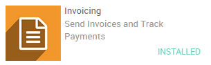
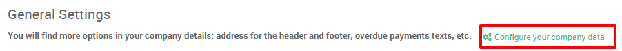
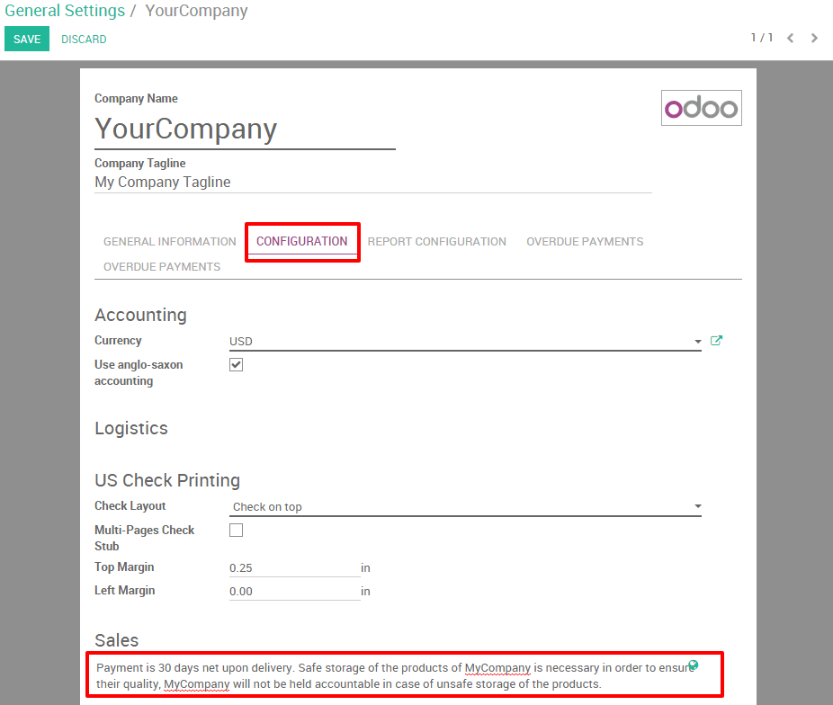
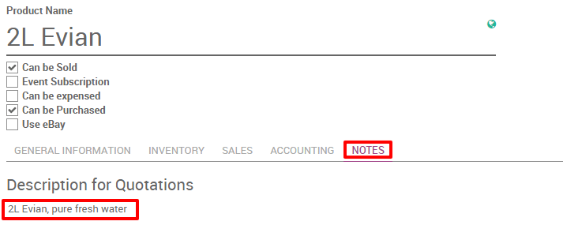
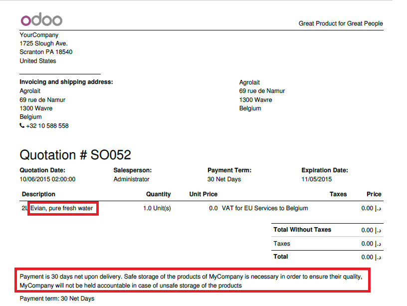

Обзор
Указание сроков и условий имеет важное значение для обеспечения хороших отношений между клиентом и продавцом. Каждый продавец должен предоставить всю официальную информацию, которая включает продукты и политику компании, чтобы клиент мог прочитать все эти условия, прежде чем совершать что-либо.
Благодаря Odoo вы можете легко включить свои условия по умолчанию для каждой котировки, заказа клиента и счета-фактуры. Кроме того, вы также можете указать конкретную информацию о любых продуктах.
Возьмем следующий пример: Ваша компания продает бутылки с водой в рестораны, и вы хотели бы добавить следующие стандартные условия на все ваши расценки:
- Payment is 30 days net upon delivery. Safe storage of the products of MyCompany is necessary in order to ensure their quality, MyCompany will not be held accountable in case of unsafe storage of the products.
Настройка
Никакой специальной конфигурации не требуется, чтобы добавлять ваши условия. Тем не менее, необходимо установить приложение счета-фактуры для возможности отправки счетов-фактур. Для этого зайдите в модуль приложения и установите приложение для выставления счетов.
Общие положения и условия
Общие положения и условия могут быть указаны в данных компании. Затем они автоматически появятся в каждом документе на продажу из котировки на счет-фактуру.
Чтобы указать свои сроки и условия, перейдите в: menuselection: [UNKNOWN NODE title_reference] (см. Рисунок ниже).
В этом новом окне вы сможете указать наши общие сроки и условия, отредактировав страницу и перейдя в окно конфигурации (см. Рисунок ниже).
Информация о продукте
Также можно добавить конкретную информацию о продукте по котировке. Чтобы добавить информацию о бутылке с водой в свою цитату, перейдите к: menuselection: [UNKNOWN NODE title_reference].
Выберите или создайте водяной пузырь в продуктах. Нажмите на свой продукт, затем нажмите кнопку «Изменить»
Если вы заходите в виджет заметок, у вас будет возможность указать ваше описание, необходимое для цитаты (см. Рисунок ниже).
Котировки и условия продажи
После сохранения ваши условия появятся в вашей котировке.
